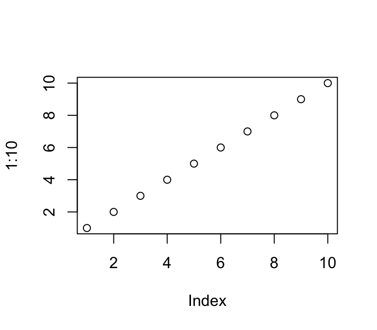

Multiple bibliographies
Basic example
Introduction
Computers should be a thing (Lovelace 1842).
Conclusion
Computers can do fancy math (Turing 1936).
References
Lovelace, Ada Augusta. 1842. “Sketch of the Analytical Engine Invented by Charles Babbage, by LF Menabrea, Officer of the Military Engineers, with Notes Upon the Memoir by the Translator.” Taylor’s Scientific Memoirs 3: 666–731.
Turing, Alan Mathison. 1936. “On Computable Numbers, with an Application to the Entscheidungsproblem.” Journal of Math 58 (345–363): 230–65.
Appendix
Software details
We used R Core Team (2023) and Stan Development Team (2023) for our analysis.
Robustness checks
Here’s a table to placate reviewers.
| Something | Something else |
|---|---|
| 1 | Apple |
| 2 | Bat |
Appendix references
R Core Team. 2023. “R: A Language and Environment for Statistical Computing.” Vienna, Austria: R Foundation for Statistical Computing. https://www.r-project.org/.
Stan Development Team. 2023. “Stan Modeling Language.” https://mc-stan.org.